← Index · ← Previous · Next →
Authors: Yuna Gouin, Sugumi Kanno, Jiro Soda
Type: theory · Category: other · PDF: https://arxiv.org/pdf/2607.20107v1
Analysis basis: full PDF text, analyzed in chunks
Topic relevance: correlated / nonlocal dissipation 2/5 · methods for driven-dissipative 2/5 · non-equilibrium dynamics 2/5 · Keldysh / 2PI / non-Gaussian methods 1/5 · analog quantum simulation 1/5 · driven-dissipative phase transition 1/5 · entanglement & information structure 1/5 · non-equilibrium universality 1/5 · quantum optics experiment 1/5
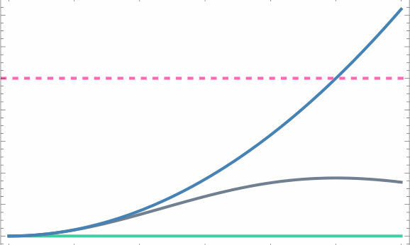
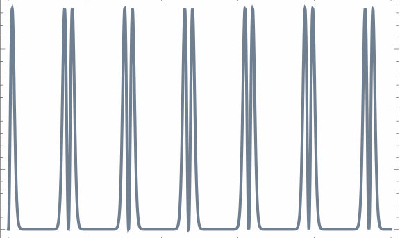
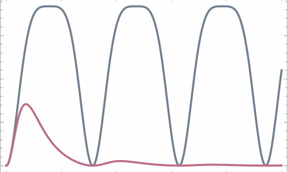
Summary. This paper analyzes the conversion of gravitons into phonons by solving the full quantum dynamics exactly. It finds that while first-order perturbation theory predicts strong enhancement, the true quantum evolution exhibits intermittent bursts separated by suppression for both coherent and squeezed initial states. This non-perturbative behavior offers a unique signature for detecting single quanta in gravitational wave detectors.
Why it may be interesting. This work provides an excellent example of how non-perturbative quantum effects (like intermittency) manifest in coupled bosonic systems, offering insights applicable to open quantum systems dynamics beyond simple weak coupling limits.
Main problem. The study investigates quantum graviton-phonon conversion beyond first-order perturbation theory to establish a robust, non-perturbative signature of the quantum nature of gravity for single-graviton detection.
Main result. For coherent and squeezed initial states, the exact quantum dynamics reveal intermittent conversion bursts separated by strong suppression, which is fundamentally different from the predictions of simple perturbative expansions.
Method. The authors solved the full quantum dynamics exactly using an algebraic method, reducing the problem to a set of coupled ordinary differential equations (ODEs) within the rotating-wave approximation.
Model / system. The system models the interaction between a graviton field and a phonon mode in a resonant bar detector. The Hamiltonian is derived under the rotating-wave approximation, coupling the two bosonic fields.
Key observables. Conversion probability ($P_{g o p}(t)$), satisfaction of the unitarity bound, and the observation of intermittent time evolution patterns.
Important parameters / regimes. The initial state type (coherent vs. squeezed) and the magnitude of the squeezing/coherence parameters ($\alpha$ or $\xi$).
Assumptions / limitations. The analysis is performed within the rotating-wave approximation (RWA), which is noted as a limitation, and the derived ODE system has restrictions on its parameter range.
Figures summary. Figures compare perturbative predictions against exact quantum results for both coherent and squeezed states, explicitly showing where perturbation theory violates unitarity or fails to capture the intermittent behavior.
Paper structure. The paper first establishes the physical model and Hamiltonian under RWA. It then develops the full quantum dynamics by solving the time-evolution equations into a closed system of ODEs. Finally, it analyzes the results for coherent and squeezed states, contrasting the exact findings with perturbative approximations.
A graviton can be converted into a phonon in a resonant bar detector. First-order perturbation theory predicts a strong enhancement of this conversion for coherent and squeezed graviton states, but the probability can exceed unity when the coherent or squeezing parameter is large. Since a conversion probability must satisfy the unitarity bound, we solve the graviton-phonon quantum dynamics exactly within the rotating-wave approximation. For an initial coherent state, we find that the conversion occurs intermittently through narrow bursts separated by intervals of strong suppression. For an initial squeezed state, the departure from perturbative behavior occurs earlier, and the conversion is strongly suppressed after its initial growth. These effects may provide signatures of quantum graviton-phonon dynamics relevant to single-graviton detection.
Authors: Fan Meng, Hao Zhu, Xin-Yao Huang, Guo-Feng Zhang
Type: theory · Category: other · PDF: https://arxiv.org/pdf/2607.19853v1
Analysis basis: full PDF text, analyzed in chunks
Topic relevance: analog quantum simulation 2/5 · Keldysh / 2PI / non-Gaussian methods 1/5 · correlated / nonlocal dissipation 1/5 · driven-dissipative phase transition 1/5 · entanglement & information structure 1/5 · interference shaping light 1/5 · methods for driven-dissipative 1/5
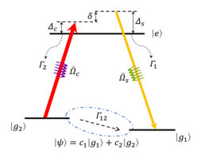
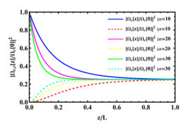
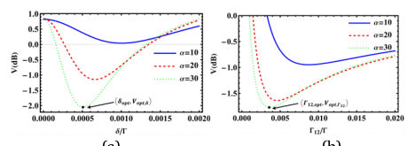
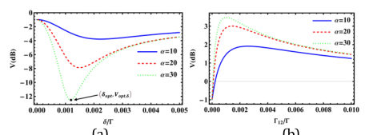
Summary. This paper presents a theoretical scheme to generate vortex optical squeezing by exploiting Raman scattering within an atomic ensemble prepared in a coherent superposition state. By analyzing quantum fluctuations, the authors demonstrate that both incident control and generated signal fields can exhibit squeezing, offering a flexible alternative to conventional nonlinear optics methods for quantum information applications.
Why it may be interesting. This work is highly relevant as it proposes a new platform for generating non-classical light (squeezing) using fundamental atomic interactions (Raman scattering), which is a core topic in quantum optics and AMO physics. The ability to tune the squeezing via system parameters adds significant practical depth.
Main problem. The authors theoretically propose an alternative method for generating vortex optical squeezing, distinct from established techniques like parametric down-conversion or four-wave mixing.
Main result. They show that using Raman scattering in a coherently prepared medium allows both the control and signal fields to exhibit measurable squeezing. Furthermore, they demonstrate that optimal squeezing values can be achieved by tuning system parameters.
Method. The analysis involves deriving and solving quantum fluctuation equations for the light fields coupled to an atomic ensemble, utilizing the mean-field approximation.
Model / system. The physical model is a three-level L-type atomic structure (potentially using $^{87} ext{Rb}$), where the ground state is coherently prepared. The interaction dynamics are governed by the system Hamiltonian and analyzed via Heisenberg-Langevin equations.
Key observables. Squeezing degree ($V$) for both the control and signal light fields, orthogonal variance ($\langle\Delta X_c \Delta X_s angle$).
Important parameters / regimes. Two-photon detuning ($ ext{s}_c d$), optical density ($\alpha$), topological charge ($l$), and ground-state relaxation rate ($\Gamma_G$).
Assumptions / limitations. The analysis relies on the weak interaction approximation and assumes that mode conversion devices are not necessary for this scheme.
Figures summary. Figures illustrate the dependence of light intensities, signal field squeezing degree ($V$) versus two-photon detuning ($d$), and $V$ versus ground-state relaxation rate ($\Gamma_G$) for both control and signal fields.
Paper structure. The paper first introduces the theoretical framework using a three-level system Hamiltonian. It then develops the quantum fluctuation equations, analyzes the squeezing observables by tuning parameters like detuning and density, and concludes by comparing this novel Raman scheme to existing methods.
In this Letter, we theoretically propose an alternative scheme for generating vortex optical squeezing, based on the Raman scattering process in a coherently prepared medium, distinct from approaches such as parametric down-conversion and four-wave mixing. Our analysis reveals that both the input control field and the generated signal field can exhibit squeezing upon adjusting the relevant system parameters, with the control field exhibiting a greater degree of squeezing under identical conditions. We further demonstrate the existence of optimal squeezing values over a range of tuning parameters, highlighting the flexibility and robustness of the proposed scheme. These findings may offer a new reference for continuous-variable vortex optical squeezing and possess potential applications in domains such as quantum information processing, quantum precision measurement, and quantum sensing.
Authors: Dawid Ciszewski, Wojciech Grochala
Type: theory · Category: strongly correlated electrons · PDF: https://arxiv.org/pdf/2607.20032v1
Analysis basis: full PDF text, analyzed in chunks
Topic relevance: analog quantum simulation 2/5 · driven-dissipative phase transition 2/5 · Keldysh / 2PI / non-Gaussian methods 1/5 · Kondo & dissipative impurity 1/5 · methods for driven-dissipative 1/5 · non-equilibrium dynamics 1/5
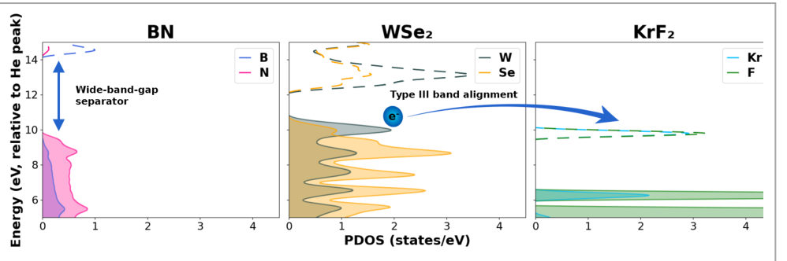
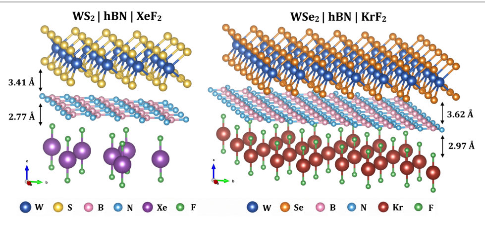
Summary. This theoretical study demonstrates that van der Waals heterostructures can be highly doped using noble gas fluorides ($ ext{XeF}_2$, $ ext{KrF}_2$) acting as chemical capacitors. DFT calculations confirm significant, non-contact charge transfer into TMDs like $ ext{WS}_2$ and $ ext{WSe}_2$. This offers a powerful new strategy for engineering electronic properties in 2D materials.
Why it may be interesting. While focused on solid-state doping, the ability to precisely tune electronic states via chemical potential differences mimics concepts relevant to open quantum systems where external chemical baths or coupling mediate state preparation.
Main problem. The primary challenge is achieving precise, stable, and controllable carrier density (doping) in atomically thin van der Waals materials without applying external electric fields or causing structural damage.
Main result. Noble gas fluorides ($ ext{XeF}_2$, $ ext{KrF}_2$) provide an efficient, non-contact chemical route to induce significant hole doping ($0.23 - 0.35 h^+$ per W atom) in TMD heterostructures.
Method. The study employs periodic Density Functional Theory (DFT) calculations using advanced functionals (SCAN meta-GGA with rVV10 correction) to model charge transfer across van der Waals interfaces.
Model / system. The system modeled is the $ ext{TMD} | ext{hBN} | ext{OX}$ heterostructure, where TMDs are transition metal dichalcogenides ($ ext{WS}_2$, $ ext{WSe}_2$), $ ext{hBN}$ acts as a dielectric spacer, and $ ext{OX}$ is the electron acceptor (e.g., $ ext{XeF}_2$).
Key observables. Interlayer Charge Transfer ($ ext{CT}$), resulting hole concentrations ($h^+$) per W atom, band alignment type (Type III), bond lengths, and geometric polarization.
Important parameters / regimes. Hole concentrations up to $0.35 h^+/ ext{W}$ atom; $ ext{hBN}$ separation layer properties; chemical potential differences driving CT.
Assumptions / limitations. The concept extends the 'chemical capacitor' idea, assuming that charge injection is solely driven by the chemical potential difference between donor and acceptor materials.
Figures summary. Tables summarize bond length changes across different heterostructures (Table S1) and polarization/electronic structure details. Figures illustrate optimized structures and PDOS confirming type III band alignment.
Paper structure. The paper establishes the need for non-contact doping, introduces the $ ext{TMD} | ext{hBN} | ext{OX}$ model based on chemical capacitors, performs DFT calculations to confirm large charge transfer in specific noble gas fluoride systems ($ ext{WS}_2/ ext{XeF}_2$ and $ ext{WSe}_2/ ext{KrF}_2$), and details the resulting structural/electronic changes.
Van der Waals heterostructures based on transition metal dichalcogenides, TMDs, provide a versatile platform for tailoring electronic properties through interlayer charge transfer, CT. Precise control of CT is essential because it directly determines the electronic structure and carrier concentration in atomically thin materials. Recently, the concept of a chemical capacitor has been proposed as a route to achieving exceptionally high carrier densities through CT across insulating separator layers. Here, we extend this concept to van der Waals heterostructures by investigating TMD hBN OX, oxidizer, systems using density functional theory, DFT. Following the screening of candidate TMDs and electron acceptors, XeF2 and KrF2 were identified as suitable acceptors exhibiting type III broken gap band alignment with WS2 and WSe2, respectively. Periodic DFT calculations of large supercells reveal CT corresponding to hole concentrations of up to 0.23 h+ and 0.35 h+ per W atom in WS2 hBN XeF2 and WSe2 hBN KrF2 heterostructures, respectively. The resulting charge redistribution demonstrates that noble gas fluorides provide an efficient route for noncontact engineering of carrier density in TMD heterostructures, offering a new strategy for tuning correlated electronic phases in two dimensional materials.
Authors: Mahmoud Saad Abouamer, Jakob Kaltoft Søndergaard, Petar Popovski
Type: theory · Category: quantum information and computing · PDF: https://arxiv.org/pdf/2607.19770v1
Analysis basis: full PDF text, analyzed in chunks
Topic relevance: entanglement & information structure 2/5 · Keldysh / 2PI / non-Gaussian methods 1/5 · correlated / nonlocal dissipation 1/5 · driven-dissipative phase transition 1/5 · methods for driven-dissipative 1/5
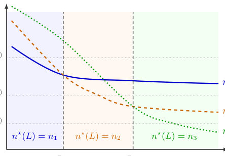
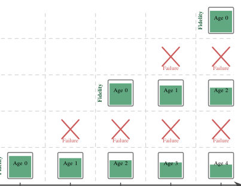
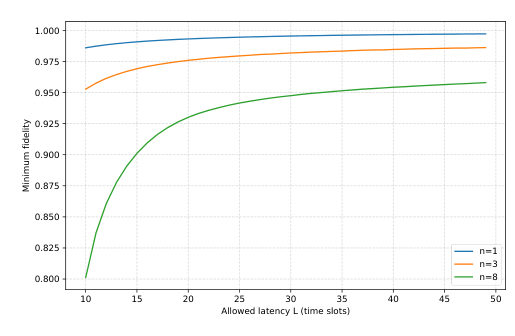
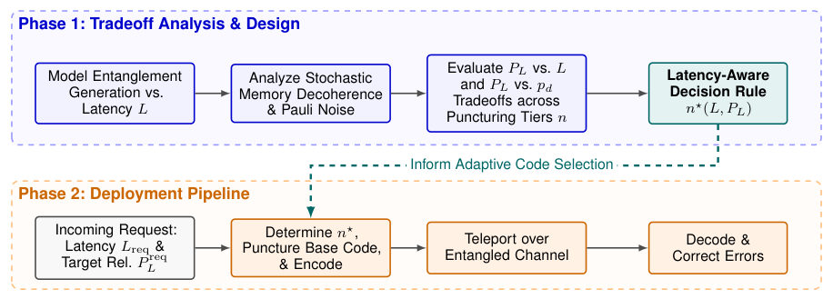
Summary. This work analyzes reliable quantum teleportation under realistic network constraints, specifically focusing on latency-induced entanglement degradation. By developing a unified framework incorporating stochastic resource generation and memory decoherence, the authors show that adaptive code puncturing is necessary to maintain high fidelity across varying operational delays. This highlights the need for resource-aware protocols in building functional quantum networks.
Why it may be interesting. It provides quantitative tools for understanding how practical network imperfections—like waiting times causing decoherence—limit the theoretical gains promised by quantum error correction codes in distributed quantum systems.
Main problem. The paper evaluates the reliability of quantum teleportation when constrained by latency, considering the interplay between entanglement availability, decoherence during storage, and the choice of error correction code.
Main result. Adaptive puncturing allows for optimal encoded teleportation performance across varying network latency regimes, demonstrating that resource-aware adaptation is crucial for reliable quantum networking.
Method. The authors developed a unified framework to model stochastic entanglement generation, memory decoherence, and the use of punctured Quantum Error-Correcting Codes (QECCs).
Model / system. The system models quantum teleportation using shared entangled pairs, where reliability is assessed by calculating the logical error probability ($P_L$) under realistic noise sources like storage decoherence.
Key observables. Logical error probability ($P_L$), entanglement fidelity ($F$), and the effective code length/distance.
Important parameters / regimes. Average entanglement-acquisition latency constraint ($L$), detection probability ($p_d$), and the rate of memory decoherence.
Assumptions / limitations. The analysis assumes a model for stochastic entanglement generation (Bernoulli trials) and an exponential decay model for storage-induced decoherence.
Figures summary. Figures illustrate the latency–reliability tradeoff, showing how optimal code length selection shifts based on constraints; other figures map $P_L$ against varying latency or link quality parameters.
Paper structure. The paper builds a unified framework by first modeling resource limitations (latency/decoherence) and then applying this model to compare uncoded vs. various encoded teleportation schemes, culminating in the proposal of adaptive code puncturing strategies.
Quantum teleportation is a key protocol for transmitting quantum information using entanglement and classical communication. Its reliability is constrained by both the availability and fidelity of shared entangled pairs, which are affected by stochastic generation and memory decoherence. In this work, we focus on encoded teleportation, in which quantum information is encoded using a quantum error-correcting code and transmitted as a codeword. We evaluate reliability in terms of logical error probability, considering latency-constrained settings where entanglement is accumulated over time and degrades while in memory. We develop a unified framework that captures the interaction between entanglement availability, decoherence, and coding decisions. Our results show that the benefits of longer codes depend on the availability and fidelity of entangled pairs, as acquiring additional resources introduces delays that can reduce their quality. To address this latency-reliability tradeoff, we leverage code puncturing to enable flexible encoded teleportation, allowing the effective code length to adapt across different latency regimes while preserving a common stabilizer structure. Numerical results show that encoded teleportation can provide substantial reliability gains over uncoded transmission under a common entanglement-acquisition latency constraint, and that selecting appropriate punctured codes improves performance across varying latency budgets. Overall, our results highlight the importance of resource-aware adaptation for reliable quantum networking.
Authors: Ryo Hagiwara, Shunta Arai, Satoshi Takabe
Type: both · Category: quantum information and computing · PDF: https://arxiv.org/pdf/2607.20042v1
Analysis basis: full PDF text, analyzed in chunks
Topic relevance: QC/QI experiment 2/5 · methods for driven-dissipative 1/5 · non-equilibrium dynamics 1/5
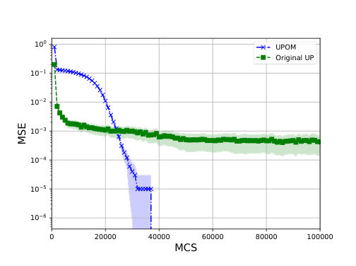
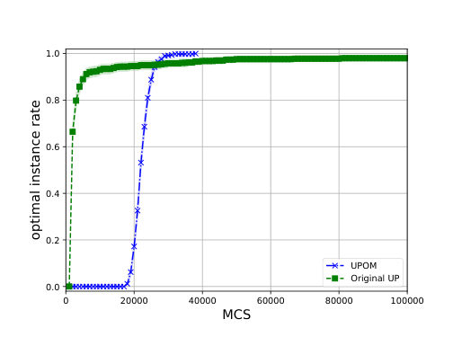
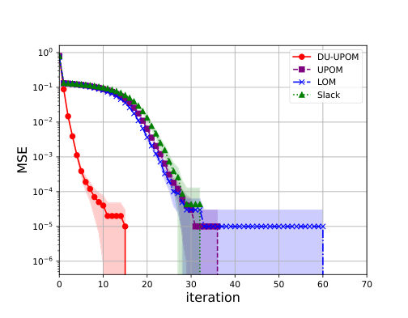
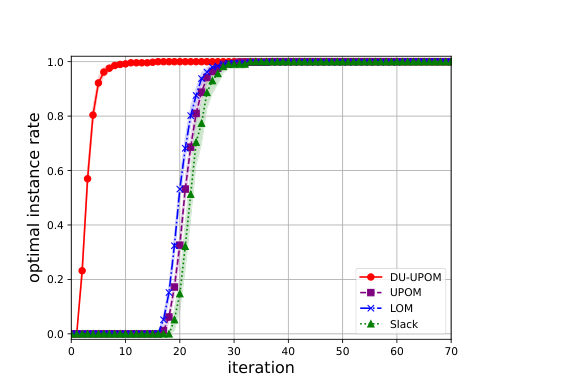
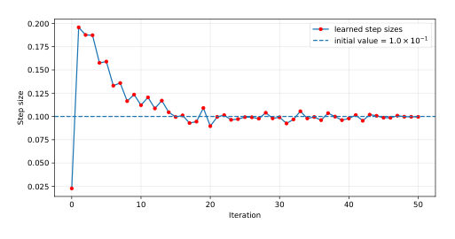
Summary. This paper presents DU-UPOM, an advanced solver designed to tackle complex combinatorial optimization problems with inequality constraints for quantum annealers. It improves upon existing methods by combining Unbalanced Penalization with the Ohzeki method and using Deep Unfolding to learn adaptive update schedules. The results show that this learned approach achieves optimal solutions much faster than static or fixed-step alternatives.
Why it may be interesting. While focused on optimization algorithms rather than fundamental quantum dynamics, the reliance on sampling distributions (MCMC) and the connection to QUBO formulations makes it highly relevant for understanding practical implementations of quantum computation hardware.
Main problem. The core problem is efficiently solving Combinatorial Optimization Problems (COPs) subject to inequality constraints when mapping them onto quantum annealers.
Main result. The proposed Deep-Unfolded Unbalanced Penalization Ohzeki Method (DU-UPOM) significantly improves convergence speed and robustness compared to previous methods by learning the optimal step-size schedule adaptively.
Method. The authors combine the Unbalanced Penalization (UP) technique for inequalities with the iterative Ohzeki method, further enhancing it using Deep Unfolding (DU) to train the update step sizes.
Model / system. The work models COPs as QUBO problems suitable for quantum annealers. The mathematical framework involves penalty functions and iterative sampling updates derived from the Ohzeki transformation.
Key observables. Mean Squared Error (MSE) of the solution relative to the optimum, Optimal Instance Rate (fraction reaching the true optimum), and the learned step-size schedule $\{\eta_t\}$.
Important parameters / regimes. Penalty coefficients ($\lambda_1, \lambda_2$), learning rate/step size schedule ($\{\eta_t\}$), and problem instance parameters (e.g., knapsack weights $w_i$ and profits $p_i$).
Assumptions / limitations. The method assumes that the expectation derivatives required for backpropagation can be estimated accurately from Monte Carlo samples drawn from the sampler distribution.
Figures summary. Figures compare convergence speed (MSE vs. iterations) showing DU-UPOM significantly outperforms fixed-step and baseline methods, and one figure illustrates the nonuniformly learned step-size schedule.
Paper structure. The paper first introduces the limitations of standard QUBO encoding for inequalities. It then details UPOM as an improvement over original UP by integrating Ohzeki's method. Finally, it extends this to DU-UPOM, training the update schedule using deep unfolding techniques and validating performance on knapsack problems.
Quantum annealing (QA) is used to solve combinatorial optimization problems (COPs). When COPs are implemented on quantum annealers, they are typically encoded as quadratic unconstrained binary optimization (QUBO) problems, but constraint encodings often increase the number of qubits and the embedding overhead. This issue is particularly important for COPs with inequality constraints, where standard slack-variable formulations introduce additional binary variables. Unbalanced penalization (UP) avoids slack variables, but the original UP formulation requires tuning two penalty coefficients and contains a squared residual term that can increase the number of quadratic couplings. In this paper, we propose the unbalanced penalization Ohzeki method (UPOM), which combines UP with the Ohzeki method for inequality-constrained COPs. UPOM replaces the two static penalty coefficients of original UP with an auxiliary-variable update and removes the squared residual term from the Hamiltonian used for sampling. We further propose the deep-unfolded unbalanced penalization Ohzeki method (DU-UPOM), which learns the step-size schedule of the UPOM update from training instances. Numerical experiments on random knapsack problems show that UPOM improves over original UP and that DU-UPOM reaches optimal solutions in fewer iterations than fixed-step UPOM and other baseline. These results demonstrate that the proposed framework reduces the tuning and embedding burdens of UP while making the Ohzeki method trainable for inequality constraints.
Authors: Diego Ruiz, Jérémie Guillaud, Christophe Vuillot, Mazyar Mirrahimi
Type: theory · Category: quantum information and computing · PDF: https://arxiv.org/pdf/2607.20143v1
Analysis basis: full PDF text, analyzed in chunks
Topic relevance: quantum measurements 2/5 · measurement-induced transitions 1/5
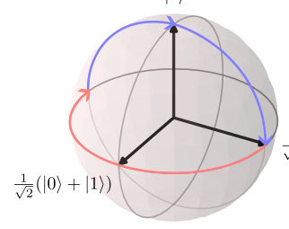
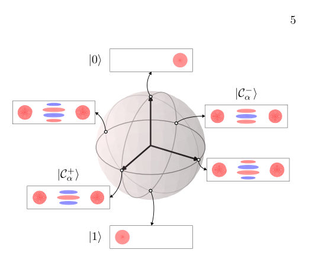
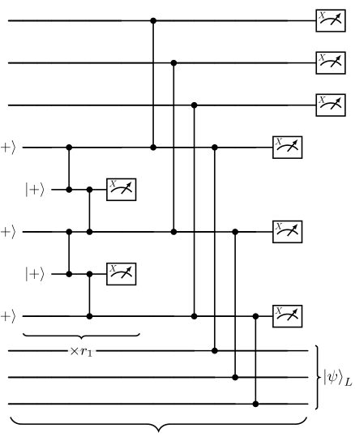
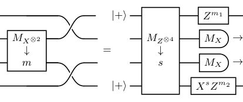
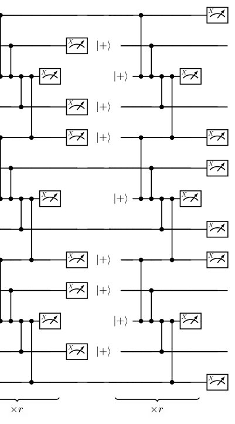
Summary. This review analyzes fault-tolerant quantum computing protocols designed specifically for qubits experiencing strongly biased noise. It demonstrates that the choice of available bias-preserving gates dictates the optimal code structure, allowing for tailored resource reduction. The work concludes by proposing a measurement-based architecture to extend these benefits across diverse physical platforms.
Why it may be interesting. It provides a detailed, actionable guide on how to tailor quantum error correction overheads by exploiting specific noise characteristics inherent in physical hardware.
Main problem. Developing efficient fault-tolerance protocols for qubits operating under strongly biased noise, where phase-flip errors significantly outnumber bit-flips.
Main result. The availability of a bias-preserving CX gate allows the error hierarchy to be encoded into the code structure, enabling specialized correction strategies; otherwise, standard error correction may suffice or a measurement-based approach is necessary.
Method. Theoretical analysis comparing fault-tolerant protocols based on the set of available 'bias-preserving operations' (CZ vs. CX vs. QND measurements).
Model / system. The analysis covers general biased-noise qubits, including physical realizations like electron/nuclear spins and engineered cat qubits.
Key observables. Error rates for phase-flips versus bit-flips; complexity overhead of syndrome extraction gadgets.
Important parameters / regimes. Noise bias ratio ($\eta = p_Z / (p_X + p_Y)$); available elementary gates (CZ, CX, QND readout).
Assumptions / limitations. The analysis hinges on the set of physically implementable, bias-preserving quantum operations.
Paper structure. The review analyzes protocols based on three architectural categories: CZ-based (showing limited benefit), CX-based (showing significant structural benefits), and Measurement-based (proposing an alternative for difficult platforms).
Qubits with strongly biased noise, in which phase-flip errors are orders of magnitude more frequent than bit-flips, arise both naturally, as in electron and nuclear spins, and by engineering, as in stabilized cat qubits. This noise structure holds the promise of reducing the daunting hardware overhead of fault-tolerant quantum computing, but exploiting it requires physical operations that do not convert frequent phase-flips into rare bit-flips. In this review, we analyze the most prominent fault-tolerant protocols for biased-noise qubits, organized according to the available set of such bias-preserving operations. When this set is restricted to the CZ gate together with preparation and measurement in the X basis, we show that the complexity of the required syndrome extraction gadgets essentially cancels the benefit of the noise bias: at experimentally relevant error rates, one may as well ignore the bias and rely on standard error correction designed for depolarizing noise. The situation changes drastically when a bias-preserving CX gate is available: the hierarchy of errors can then be reflected in the structure of the code, with frequent phase-flips corrected by a dedicated high-threshold code and rare bit-flips by concatenation with a high-rate code. The same hierarchy also enables hardware-efficient preparation of magic states. Finally, as a bias-preserving CX is forbidden in naturally biased platforms and challenging in engineered ones, we present a measurement-based architecture in which a high-fidelity quantum non-demolition readout of multi-qubit Pauli Z operators takes its place, extending these overhead reductions to a much broader range of physical platforms.
Authors: Chenhao Li, Zhihui Li, Jiansheng Guo, Yixin Chen, Yewei Wang
Type: theory · Category: quantum information and computing · PDF: https://arxiv.org/pdf/2607.19891v1
Analysis basis: full PDF text, analyzed in chunks
Topic relevance: entanglement & information structure 2/5 · quantum measurements 1/5
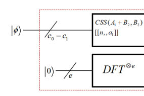
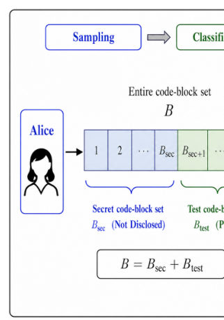
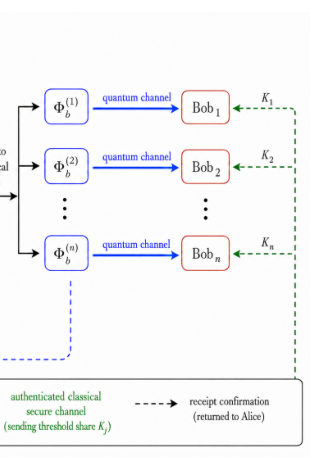
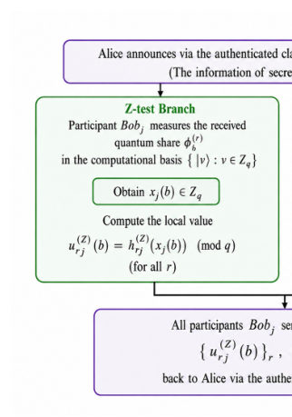
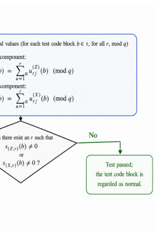
Summary. This paper develops an improved Quantum Secret Sharing scheme that overcomes limitations regarding communication cost and security leakage from intermediate sets. It achieves 'perfect' security by combining advanced quantum coding theory with a classical threshold layer, while also incorporating robust eavesdropping detection using stabilizer measurements.
Why it may be interesting. While focused on quantum cryptography rather than AMO physics, the underlying concepts of error detection (stabilizer measurements) and information encoding/sharing are fundamental to understanding noise resilience in any physical quantum system.
Main problem. The paper addresses bottlenecks in practical quantum secret sharing (QSS), specifically high communication costs and potential partial information leakage from intermediate sets.
Main result. A novel, communication-efficient perfect QSS scheme is proposed that incorporates both eavesdropping detection capabilities and eliminates information leakage by augmenting the protocol with a classical threshold layer.
Method. The authors combine extended CSS codes for quantum encoding with stabilizer-based testing (Z/X tests) for eavesdropping detection, and augment the structure with classical $(t, n)$ secret sharing to achieve perfectness.
Model / system. The system is based on Quantum Secret Sharing (QSS) protocols utilizing Extended CSS codes over $n$-qudit spaces. The security analysis focuses on multipartite quantum states distributed among multiple parties.
Key observables. Communication Cost ($ ext{CC}_n(d)$), syndrome vectors ($s_Z, s_X$), and the degree of entanglement/disentanglement in the final state $|\Psi angle$.
Important parameters / regimes. The parameters defining the access structure are $(t, n; z)$, where $t$ is the threshold, $n$ is the total size, and $z$ defines intermediate sets.
Assumptions / limitations. It assumes that decoy particles are much larger than test blocks ($N \gg B_{ ext{test}}$) and that the classical communication layer does not contribute to the quantum cost metric.
Figures summary. The notes mention figures detailing the three steps of ECSS encoding using quantum circuits and illustrating secret recovery via controlled-addition gates.
Paper structure. The paper systematically reviews existing QSS limitations, introduces the method for detecting intermediate sets, details the construction of the communication-efficient perfect scheme with detection, analyzes the resulting communication costs across different participant numbers ($d$ vs $t$), and concludes by summarizing the enhanced security and efficiency.
Quantum secret sharing is a fundamental technique in quantum cryptography. However, in practical quantum networks, it still faces several bottlenecks, such as high quantum communication cost and low transmission efficiency. To reduce the communication cost, ramp quantum secret sharing schemes have been proposed in existing studies. Nevertheless, intermediate sets in such schemes may leak partial information about the secret. To address this problem, this paper presents a method for detecting intermediate sets. Based on this method, we further propose a communication-efficient perfect quantum secret sharing scheme with eavesdropping detection capability.We analyze the communication cost under different numbers of participating parties and determine the range of participants that minimizes the reconstruction communication cost. The results verify the communication efficiency and security of the proposed scheme.
Authors: Elizabeth H. Kunz, Eli M. Levenson-Falk
Type: theory · Category: quantum information and computing · PDF: https://arxiv.org/pdf/2607.19543v1
Analysis basis: full PDF text, analyzed in chunks
Topic relevance: QC/QI experiment 2/5 · methods for driven-dissipative 1/5
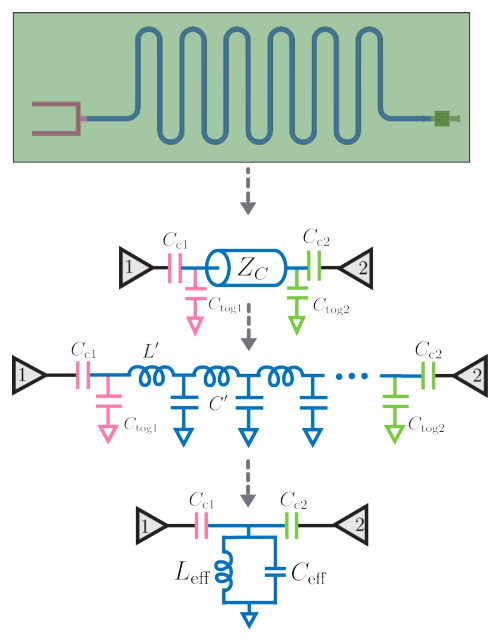
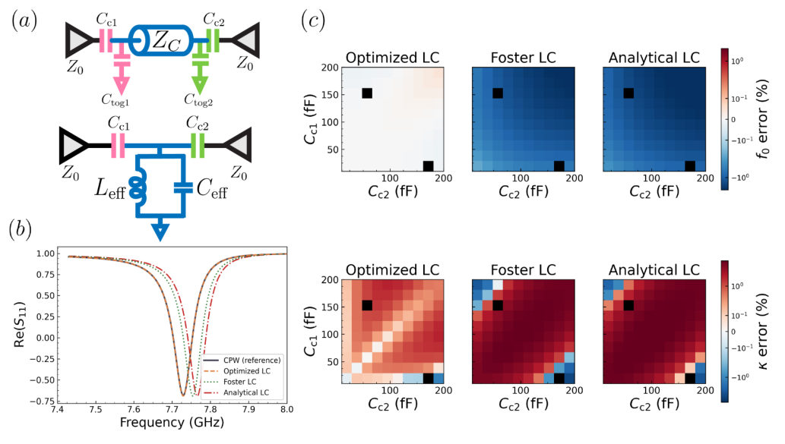
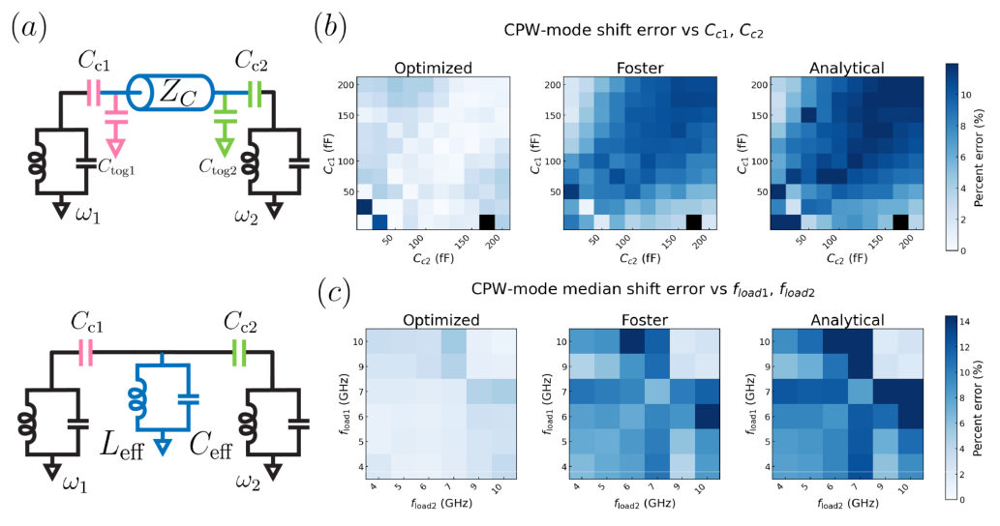
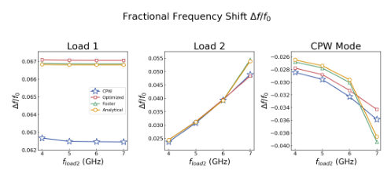
Summary. This paper introduces an efficient method to model distributed resonators in superconducting circuits by replacing the entire structure with a simple lumped LC circuit. By fitting measured scattering parameters, this technique achieves high accuracy comparable to full electromagnetic simulations, significantly streamlining the process of Hamiltonian derivation for quantum hardware design.
Why it may be interesting. This work provides a crucial tool for circuit designers in quantum computing, allowing them to build accurate quantum Hamiltonians from complex physical layouts without running full EM simulations, which is vital for scaling up superconducting qubit architectures.
Main problem. The primary challenge is developing simple, accurate lumped-element models for distributed resonators used in superconducting quantum circuits to reduce reliance on computationally expensive finite-element electromagnetic simulations.
Main result. The authors propose a novel method that accurately replaces a coupled, distributed resonator with an equivalent LC circuit model while preserving the scattering parameters and Hamiltonian predictions, even under strong coupling conditions.
Method. The technique involves simulating the full loaded transmission line using scikit-rf to obtain S-parameters, which are then fitted to determine effective lumped inductance ($L_{eff}$) and capacitance ($C_{eff}$).
Model / system. The system is superconducting quantum circuits containing distributed elements like coplanar waveguides (CPW) resonators coupled to other components. The goal is to derive an equivalent LC circuit model for the resonator.
Key observables. Scattering parameters ($S_{11}, S_{22}$), resonant frequency shift ($\Delta f$), and linewidth ($\kappa$).
Important parameters / regimes. Coupling capacitance values, operating frequency range ($ ext{f}_0 \pm 5\kappa$), and the degree of coupling strength.
Assumptions / limitations. The procedure assumes that replacing the distributed element with an LC circuit while keeping attached lumped elements fixed maintains accuracy. The model's performance relies on accurate numerical simulation of port parameters from the transmission line.
Figures summary. Figures compare the proposed method against analytical LOM and Foster synthesis approaches by plotting $S_{11}$ spectra, showing superior agreement for frequency shifts under heavy loading.
Paper structure. The paper introduces the problem of modeling distributed resonators, details the limitations of existing lumped models (LOM/BBQ), proposes the novel S-parameter fitting technique, and validates its accuracy by comparing results against established methods across various coupling scenarios.
Superconducting quantum circuit design is reliant on accurately mapping design parameters to a quantum Hamiltonian. Designers typically rely on computationally intensive finite-element electromagnetic simulations. However, effective circuit-level models can in principle capture much of the relevant physics for these systems, reducing the need for finite-element simulations. A barrier to implementing these simpler models has been the prevalence of distributed elements such as coplanar waveguides resonators in device designs. Techniques for modeling these distributed elements have been developed, but may be difficult to scale, reduce intuition, and give inaccurate results under strong coupling. In this work we describe a simple effective circuit-level model that faithfully reproduces the scattering parameters, and subsequently can predict certain Hamiltonian parameters, for a coupled, distributed element within a broader two-port network even up to strong coupling. Our approach does not explicitly require an electromagnetic simulation. Our model, along with other common lumped models used in black box quantization, is publicly available to researchers via an open-source code package, $\texttt{simpleLOMs}$.
Authors: Jun Yamamoto, Ivan Bonamassa, Márton Pósfai
Type: theory · Category: statistical mechanics · PDF: https://arxiv.org/pdf/2607.19486v1
Analysis basis: full PDF text, analyzed in chunks
Topic relevance: analog quantum simulation 1/5 · correlated / nonlocal dissipation 1/5 · driven-dissipative phase transition 1/5 · methods for driven-dissipative 1/5 · non-equilibrium dynamics 1/5 · non-equilibrium universality 1/5
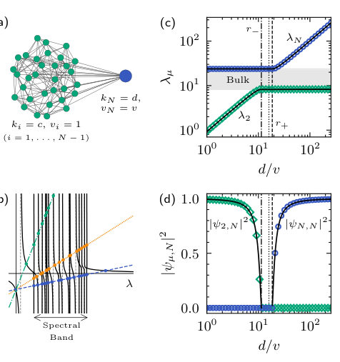
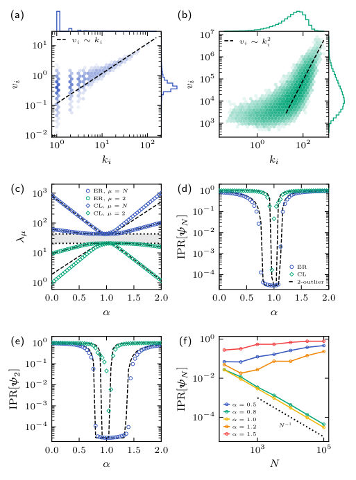
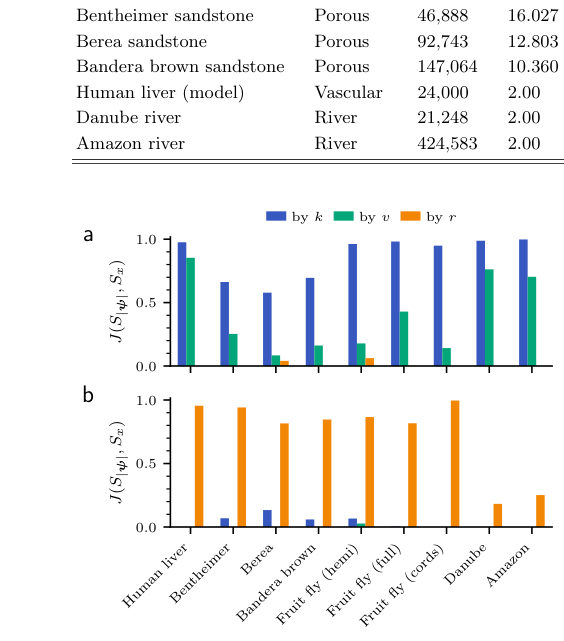
Summary. This paper analyzes how physical node volumes modify information flow dynamics (diffusion) on complex networks. It demonstrates that connectivity alone is insufficient, showing that the degree-volume ratio acts as the critical disorder parameter governing spectral localization. This provides a general framework for understanding how local physical constraints reshape global network transport properties.
Why it may be interesting. While focused on classical diffusion, the concept of localization control via an emergent ratio parameter ($k/v$) is analogous to how interaction strengths or geometric constraints can dictate quantum state confinement in engineered quantum systems.
Main problem. The study investigates how physical heterogeneity, introduced via node volumes, alters the localization patterns of diffusion dynamics in complex networks beyond what is predicted by topology alone.
Main result. The relevant disorder parameter controlling spectral localization shifts from simple degree correlations to the degree-volume ratio ($d/v$), revealing a feature-rich mechanism for controlling network transport properties.
Method. The authors employ spectral analysis of the node-weighted Laplacian, using the Inverse Participation Ratio (IPR) to quantify mode localization in both solvable defect models and empirical networks.
Model / system. The system is modeled as a connected simple network $G$ with nodes possessing degrees ($k_i$) and associated volumes ($v_i$). The dynamics are governed by the node-weighted Laplacian operator, $L_P$.
Key observables. Inverse Participation Ratio (IPR) of extremal eigenvectors ($\psi_2, \psi_N$), and the Jaccard index comparing localization sets defined by degree, volume, or ratio.
Important parameters / regimes. The primary control parameter is the degree-volume ratio ($r = d/v$) or the correlation exponent $\alpha$ governing how volumes scale with degrees ($ ext{e.g.} v_i \propto k_i^\alpha$).
Assumptions / limitations. The analysis relies on solving an analytical defect model and comparing results across synthetic random graphs (ER, CL) and real-world physical networks.
Figures summary. Figures illustrate spectral shifts in the defect model based on $d/v$, showing localization thresholds; other figures compare IPR vs. correlation exponent $\alpha$ for different graph types, confirming the shift to ratio control.
Paper structure. The paper progresses from defining the physical system and the limitations of topology-only analysis, through developing a solvable defect model using spectral theory, and finally validating these findings by analyzing empirical networks across varying degree-volume correlations ($\alpha$).
Network diffusion underlies many transport phenomena, with Laplacian modes setting how information spreads and relaxes. In physical networks, however, connectivity alone is not enough: node volumes introduce local dwell times that regulate how flow is stored before being propagated. Here we show that physical heterogeneity reshapes topology-driven localization, with the degree-volume ratio emerging as the relevant disorder parameter. We solve an analytical model in which ratio detuning qualitatively reorganizes the Laplacian spectrum, and demonstrate in empirical networks how degree-volume correlations shift extremal eigenmodes away from the nodes selected by topology alone. Our results reveal a general feature-rich-driven mechanism for localization control, showing that physicality non-trivially reshapes the disorder landscape governing network dynamics.
Authors: Yasufumi Nakano, Meera M. Parish, Jesper Levinsen
Type: theory · Category: other · PDF: https://arxiv.org/pdf/2607.19634v1
Analysis basis: full PDF text, analyzed in chunks
Topic relevance: Keldysh / 2PI / non-Gaussian methods 1/5 · analog quantum simulation 1/5 · correlated cavity matter 1/5 · driven-dissipative phase transition 1/5 · methods for driven-dissipative 1/5
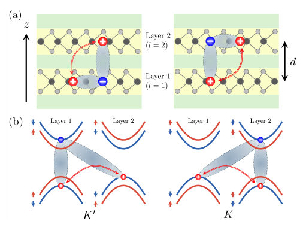
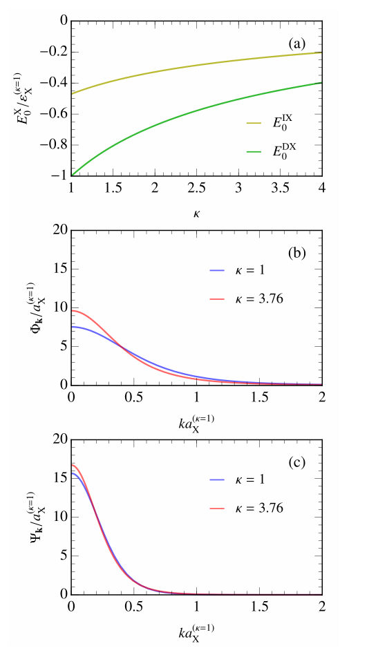
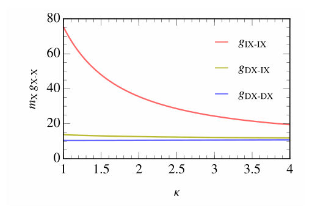
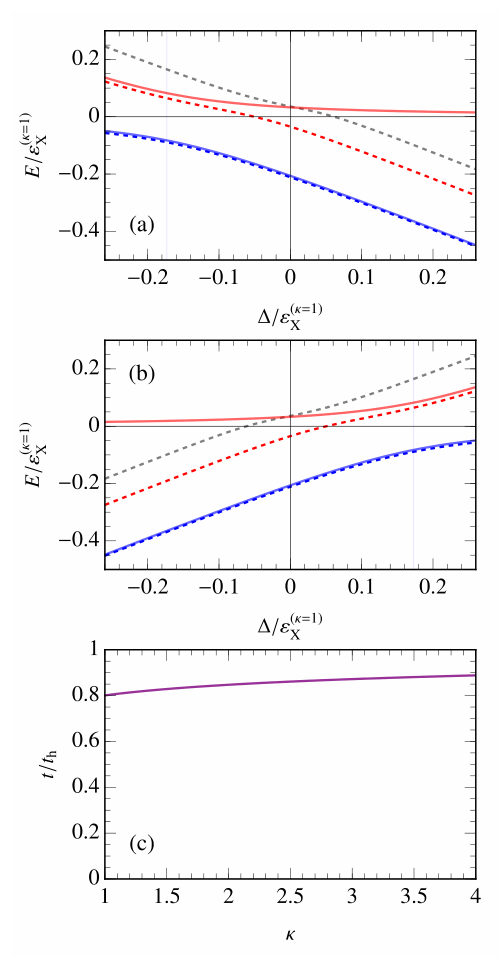
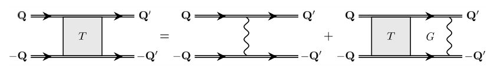
Summary. This paper develops a non-perturbative coupled-channel theory to calculate the scattering of hybrid excitons in 2D semiconductor bilayers. By incorporating interlayer tunneling and using a T-matrix approach, the authors demonstrate that exciton interactions are strongly dependent on energy and can be precisely controlled by an external electric field via the Stark shift. This offers a powerful theoretical framework for designing quantum optical devices based on tunable exciton interactions.
Why it may be interesting. This work provides advanced theoretical tools (coupled-channel T-matrix) to model interacting excitons in low-dimensional materials, which is highly relevant for understanding strongly correlated light-matter interactions in quantum optics and condensed matter physics.
Main problem. To perform non-perturbative calculations of hybrid exciton scattering beyond standard perturbative theories.
Main result. The study shows that the hybrid-exciton scattering strength can be electrically tuned via the Stark shift, and its interaction properties are governed by a coupled-channel T-matrix approach.
Method. The authors construct realistic pseudopotentials from microscopic descriptions and employ a non-perturbative coupled-channel scattering integral equation (T-matrix approach).
Model / system. The system is hybrid excitons formed in a two-dimensional semiconductor bilayer, involving the hybridization of spatially direct (DX) and indirect (IX) exciton states via interlayer tunneling.
Key observables. Hybrid-exciton T matrices, interaction strength dependence on Stark shift ($\Delta$), and exciton weights (DX/IX fractions).
Important parameters / regimes. Dielectric constant ($\kappa$), electric field induced detuning ($\Delta$), and momentum transfer ($q$).
Assumptions / limitations. The analysis assumes equal masses for electrons and holes, and uses a projection method onto the two-exciton subspace.
Figures summary. Figures illustrate schematic hybridization in $ ext{MoS}_2$ bilayers, energy levels vs. dielectric constant, and T-matrices showing dependence on the Stark shift.
Paper structure. The paper progresses from defining the microscopic Hamiltonian to constructing pseudopotentials, applying a coupled-channel T-matrix formalism for non-perturbative scattering, and finally analyzing tuning mechanisms via the Stark effect.
We consider the interactions of hybrid excitons in a two-dimensional semiconductor bilayer, where spatially direct and indirect excitons are hybridized by interlayer charge-carrier tunneling. Starting from a microscopic electron-hole description, we construct realistic pseudopotentials for exciton-exciton interactions and use them as inputs to a coupled-channel scattering integral equation. This enables non-perturbative calculations of hybrid-exciton scattering beyond standard perturbative theories, and highlights the importance of energy-dependent scattering and channel mixing. In particular, we show that the interaction strength of hybrid excitons exhibits a rapid growth with increasing energy, which we find is inherited from their indirect-exciton component. We further demonstrate that dielectric screening affects the direct and indirect channels in distinct ways, leading to markedly different interaction strengths across experimentally relevant dielectric environments. Finally, we show that the hybrid-exciton scattering strength can be electrically tuned via the Stark shift, which controls the direct-indirect detuning and hence the hybridization of the two exciton modes.
Authors: Fatma Zohra Khaled, Mustafa Moumni, Mokhtar Falek
Type: theory · Category: statistical mechanics · PDF: https://arxiv.org/pdf/2607.19601v1
Analysis basis: full PDF text, analyzed in chunks
Topic relevance: Keldysh / 2PI / non-Gaussian methods 1/5 · driven-dissipative phase transition 1/5 · methods for driven-dissipative 1/5
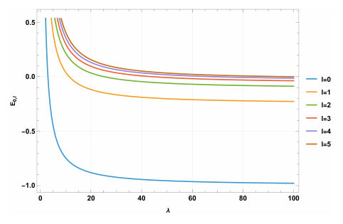
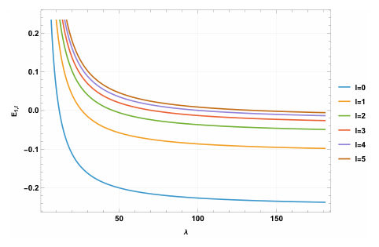
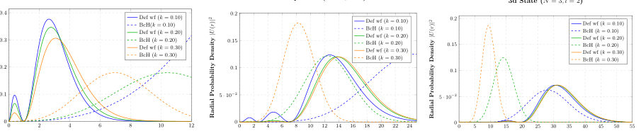
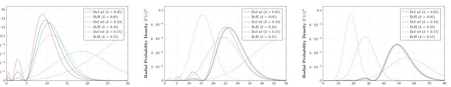
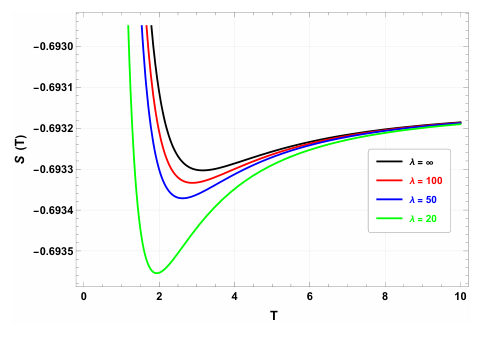
Summary. This paper theoretically investigates the bound states of hydrogen-like atoms subjected to plasma screening, modeled by the Yukawa potential. By transforming the problem into a bi-confluent Heun equation, the authors derive analytic expressions for energy eigenvalues and wavefunctions. The key contribution is establishing a robust analytical framework that remains accurate across different screening regimes while correctly recovering the standard Coulomb result.
Why it may be interesting. This work provides a rigorous analytical extension to standard atomic physics problems by incorporating plasma screening effects. The development of multiple consistent calculation methods (HFT vs. Expectation Value) is valuable for theoretical modeling in open quantum systems.
Main problem. The study focuses on determining the energy spectrum and thermodynamic properties of hydrogen-like atomic systems when embedded in a plasma environment.
Main result. The authors developed an analytic framework providing explicit formulas for wavefunctions and eigenenergies valid across various screening strengths, successfully recovering the known Coulomb limit where appropriate.
Method. The analysis employs advanced quantum mechanical techniques including solving the radial Schrödinger equation transformed into a bi-confluent Heun (BCH) equation. Energy eigenvalues are computed using multiple consistent methods: direct expectation values and the Hellmann-Feynman theorem.
Model / system. The system is hydrogen-like atoms interacting via the Screened Coulomb Potential (Yukawa potential), $V(r) = -Ze^2 e^{-kr}/r$. The Hamiltonian is non-relativistic, and the analysis involves approximations using the Killingbeck potential derived from a Taylor expansion of the SCP.
Key observables. Energy eigenvalues ($E_{n_r,\ell}$), radial wavefunctions ($\psi$), free energy ($F$), entropy, and partition function ($Z$).
Important parameters / regimes. The screening parameter $k$ (related to plasma density) is crucial; the limit $k o 0$ recovers the standard Coulomb case.
Assumptions / limitations. Initial solutions based on the BCH equation are limited because they fail to smoothly reduce to the pure Coulomb eigenfunctions when $k=0$. The authors overcome this by constructing corrected wavefunctions analytically.
Paper structure. The paper first establishes the problem using the SCP and its reduction to the BCH equation. It then details two main approaches: (1) deriving exact solutions for a truncated potential, and (2) proposing an alternative analytic method by treating parameters as functions of $k$. Finally, it computes energy spectra via direct expectation values and the Hellmann-Feynman theorem, concluding with thermodynamic derivations.
We conduct a non-relativistic study of plasma screening effects on hydrogen-like atomic systems using the Screened Coulomb Potential (SCP i.e. Yukawa potential). The radial Schrödinger equation is first reduced to a bi-confluent Heun (BCH) equation for the Killingbeck potential which is the truncated version of the SCP, and we write the exact BCH eigenfunctions and eigenenergies. We then study the limitations of these BCH solutions and obtain an analytic description valid for weak to moderate screening using the BCH functional form. The corrected eigenfunctions are constructed order by order up to O(k^3); they are expressed in terms of the Laguerre polynomials and reduces exactly to Coulomb eigenfunctions when k=0. Using these Functions, the energy spectrum is computed via two analytic methods: (i) direct evaluation of the full Yukawa Hamiltonian expectation value, and (ii) the Hellmann-Feynman theorem, yielding integral representation. All methods presented here provide explicit analytical formulas for both wavefunctions and eigenenergies valid for different ranges of the screening. These methods establish a powerful analytic framework for studying confined quantum systems. The thermodynamic properties are also derived using the BCH formulation.
Authors: Anuj Agrawal, Abhay Singh Dulta, Bhaskar Kanseri
Type: both · Category: quantum information and computing · PDF: https://arxiv.org/pdf/2607.19849v1
Analysis basis: full PDF text, analyzed in chunks
Topic relevance: entanglement & information structure 1/5 · interference shaping light 1/5 · quantum optics experiment 1/5
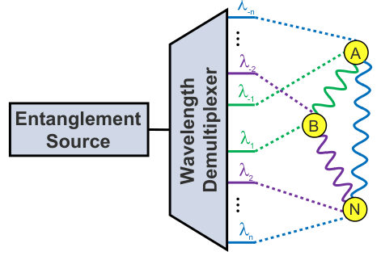
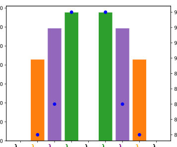
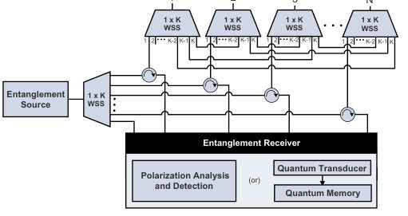
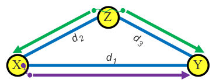
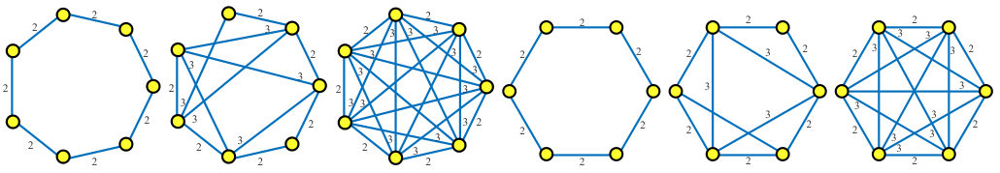
Summary. This work proposes a method to enhance entanglement distribution in complex quantum optical networks by employing multiple distributed Entanglement Photon Pair Sources (EPPSs). By simulating performance across various mesh topologies and comparing centralized versus decentralized source placement, the authors demonstrate that distributing sources significantly boosts network capacity and resource efficiency. This advances the feasibility of building large-scale, repeaterless quantum communication links.
Why it may be interesting. It provides concrete simulation results on scaling quantum network capabilities beyond simple point-to-point links, which is crucial for realizing large-scale quantum internet infrastructure.
Main problem. The study addresses the challenge of distributing entanglement across large, multi-hop quantum optical networks without relying on quantum repeaters.
Main result. Distributed entanglement distribution using multiple Entanglement Photon Pair Sources (EPPSs) significantly outperforms centralized sources by improving resource utilization and accepting higher network demands.
Method. The authors simulate network performance by comparing different EPPS placement strategies (centralized vs. distributed) across various topologies, considering One-Photon (OP) and Both-Photon (BP) distribution schemes.
Model / system. The system is a Wavelength Division Multiplexing (WDM)-based quantum optical network utilizing multiple SPDC-based EPPSs in repeaterless mesh topologies (e.g., 7-PMESH).
Key observables. Entanglement Demand Acceptance Ratio (EDAR), Entanglement Resource Utilization Ratio (ERUR), and entanglement visibility/ebit rate degradation.
Important parameters / regimes. Fiber length, number of hops, EPPS placement strategy (centralized vs. distributed), and the type of entanglement distribution scheme (OP/BP).
Assumptions / limitations. The analysis assumes a passive WDM approach without quantum repeaters; performance metrics are derived from simulated coincidence counts.
Figures summary. Figures illustrate EDAR vs. Network Load curves comparing different EPPS placements in mesh networks, and ERUR comparisons showing the benefit of distributed placement.
Paper structure. The paper progresses by first establishing the limitations of single-source entanglement distribution, then introducing the multi-EPPS WDM approach, followed by detailed comparative analysis using graph theory concepts (centrality) to optimize EPPS placement for maximizing EDAR and ERUR.
Quantum network implementations using single spontaneous parametric downconversion (SPDC)-based broadband entangled photon pair source (EPPS) have been reported recently. Here, leveraging the wavelength-correlation between entangled photon pairs, the traditional wavelength division multiplexing (WDM) method is utilized to route photons based on their wavelengths. From single EPPS, entangled photon pairs are distributed in a centralized way to different node pairs in the network. However, the number of nodes pairs that can be entangled in a network is limited by the number of entangled wavelength pairs that an EPPS can generate. To entangle a higher number of node pairs in a network, multiple EPPSs can be employed. In this work, we present a WDM-based entanglement distribution approach using multiple EPPSs in multi-hop repeaterless mesh optical networks. We experimentally characterize two EPPSs developed in-house and consider multiple such EPPSs in the network to perform network-level simulations. We consider heterogeneous entanglement demands requiring different entanglement bit (ebit) rates and entanglement visibility. For each entanglement demand, EPPS placement/selection, wavelength-pair assignment, and photon pair routing are performed considering the degradation in both ebit rate and visibility with fiber length and hops in the network. Two main findings of this study include: (i) a hybrid approach of one-photon (OP) and both-photon (BP) entanglement distribution provides higher flexibility in multi-EPPS placement and (ii) distributed entanglement distribution using multiple EPPSs enables better entanglement resource utilization and higher entanglement demand acceptance as compared to centralized entanglement distribution.
Authors: Anvar Khujakulov, Michele Guerrini, Carlo Andrea Rozzi, Caterina Cocchi
Type: theory · Category: other · PDF: https://arxiv.org/pdf/2607.19828v1
Analysis basis: full PDF text, analyzed in chunks
Topic relevance: interference shaping light 1/5 · methods for driven-dissipative 1/5 · non-equilibrium dynamics 1/5
Summary. This paper develops a theoretical method to calculate the full multipolar cross section by incorporating quadrupole contributions, moving beyond the standard dipole approximation for atomic response. Using the hydrogen atom as a benchmark, the authors simulate real-time electron dynamics under varying electric field gradients. The results show that strong fields activate distinct low-energy spectral features due to these higher-order coupling mechanisms.
Why it may be interesting. This work provides a rigorous computational framework for understanding how higher-order field interactions govern light absorption and emission in nanoscale or molecular settings where simple dipole approximations fail. It is highly relevant to quantum optics and open quantum systems dynamics.
Main problem. The study addresses the necessity of going beyond the dipole approximation to probe multipolar cross sections, specifically quadrupolar contributions, when analyzing atomic and molecular responses in highly inhomogeneous electric fields.
Main result. The research demonstrates that quadrupole interactions become crucial under strong gradients or intense fields, leading to distinct spectral features such as low-energy sub-1 eV absorption or stimulated emission peaks not predicted by dipole theory alone.
Method. The authors employ real-time, non-perturbative simulations using the Time-Dependent Schrödinger Equation (TDSE) framework, extending established methods like those in Octopus code.
Model / system. The primary benchmark system is the hydrogen atom, treated as a one-electron system. The analysis involves modeling electron dynamics under an interaction Hamiltonian containing both dipole and quadrupole terms derived from field gradients.
Key observables. Photo-absorption cross section ($\sigma_{ ext{tot}}(\omega)$), quadrupole expectation value ($\Omega_{qd}(t)$), and the ratio of multipolar contributions ($\sigma_{qd}/\sigma_d$).
Important parameters / regimes. Field regimes include weak, linear response (dipole dominated) versus strong, nonlinear response (quadrupole effects become prominent); energy scales range from sub-1 eV to 12.1 eV.
Assumptions / limitations. The methodology relies on the multipolar expansion for classification but uses non-perturbative real-time propagation; limitations include potential discrepancies between TDSE and finite-grid solvers like Octopus.
Figures summary. Figures illustrate how the total cross section changes across different field regimes (linear vs. nonlinear), showing resonance depletion and the emergence of low-energy features attributable to higher-order multipole coupling.
Paper structure. The paper systematically analyzes four distinct excitation regimes (WD, SD, WD+WQ, SD+SQ) using the hydrogen atom benchmark, building a theoretical foundation for non-perturbative multipole simulations in near-field environments.
The non-perturbative evaluation of multipolar cross sections is essential for probing atomic and molecular responses to spatially inhomogeneous electric fields characteristic of nanoscale environments where the conventional dipole approximation breaks down. Taking the hydrogen atom as an analytical and numerical benchmark, we map in real time quadrupole interactions driven by instantaneous electric field gradients. Our study explores two distinct interaction regimes. Under a uniform field, quadrupolar responses are activated by multi-step dipole transitions, responsible for sub-1~eV excited-state absorption. Conversely, under pure spatial gradients, the weak-field response is dominated by the single-photon $1s \to 3d$ quadrupole resonance at 12.1~eV, while strong gradients induce low-energy stimulated emission via transiently driven coherent populations. This dynamical analysis is complemented by a rigorous evaluation of the symmetry aspects of the quadrupole response and the applied electric field. This methodology establishes the theoretical and computational foundation for future non-perturbative multipole simulations of molecules and nanostructures in the near-field regime.
Authors: Duy-Nhat Ly, Thanh-Son Nguyen, Ngoc-Tram D. Hoang, Van-Hoang Le
Type: theory · Category: other · PDF: https://arxiv.org/pdf/2607.19698v1
Analysis basis: full PDF text, analyzed in chunks
Topic relevance: correlated cavity matter 1/5 · spintronics-quantum-optics interface 1/5
Summary. This paper introduces an advanced analytical framework to extract fundamental material properties from excitonic spectroscopy data of 2D semiconductor monolayers. By utilizing two complementary stages—analyzing zero-field spectra and then the magnetic field dependence—the authors derive parameters like bandgap, screening length, and exciton mass without needing additional fitting parameters. This offers a powerful, physically transparent tool for characterizing TMDs.
Why it may be interesting. The analytical nature of the retrieval method provides a highly transparent and efficient alternative to complex numerical fitting routines, which is valuable for rapid characterization in quantum optics.
Main problem. The goal is to develop an analytical procedure to retrieve fundamental material parameters of monolayer transition-metal dichalcogenides (TMDCs) from their optical and magneto-optical exciton spectra.
Main result. The proposed two-stage analytical framework successfully determines key parameters like the bandgap, screening length, reduced exciton mass, and dielectric constant with high accuracy.
Method. It employs an analytical inversion procedure based on solving equations derived from the solvable modified Kratzer model, avoiding iterative fitting or matrix diagonalization.
Model / system. The study focuses on excitons in monolayer TMDCs (e.g., WSe2, MoS2) embedded in various dielectric environments. The physics is modeled using an exciton Hamiltonian solved via basis set expansion for magnetoexciton spectra.
Key observables. Exciton energies ($E_n$), the ratio of energy differences ($\Delta_{ ext{exp}}$), and the magnetic-field dependence of exciton energies $E_n(B)$.
Important parameters / regimes. Quasiparticle bandgap ($E_g$), effective screening parameter ($\xi$), energy scaling factor ($\eta$), reduced exciton mass ($\mu$), and surrounding dielectric constant ($\kappa$).
Assumptions / limitations. The analysis relies on the solvable modified Kratzer model approximation for describing excitonic binding energies, which is an analytical simplification of the full physics.
Figures summary. Figures illustrate the comparison between theoretical predictions (using the derived formulas) and experimental/numerical results for magnetoexciton spectra across different TMDCs and magnetic fields.
Paper structure. The paper details a two-stage retrieval process: Stage 1 uses zero-field exciton energies ($E_1, E_2, E_3$) to find $\xi$, $\eta$, and $E_g$; Stage 2 uses the field dependence of these energies to independently determine $\mu$ and subsequently $\kappa$.
We develop an analytical procedure to retrieve fundamental material parameters of monolayer transition-metal dichalcogenides from optical and magneto-optical exciton spectra, based on the solvable modified Kratzer model. The proposed retrieval procedure naturally consists of two complementary stages. In the first stage, explicit inversion formulas determine the quasiparticle bandgap, effective screening parameter, and energy scaling factor directly from the experimentally measured energies of the three lowest excitonic states, from which the screening length is subsequently obtained. In the second stage, an analytical expression for the magnetic-field dependence of the exciton energies independently yields the reduced exciton mass, from which the surrounding dielectric constant is then calculated. Once the complete set of material parameters has been retrieved, the framework analytically predicts the diamagnetic coefficients, exciton radii, and complete magnetoexciton spectra without introducing additional fitting parameters or matrix diagonalization. The method is applied to a broad range of experimental samples for WSe$_2$, WS$_2$, MoS$_2$, MoSe$_2$, and MoTe$_2$ monolayers embedded in different dielectric environments. The retrieved material parameters are in good agreement with independent experimental measurements and previous Rytova--Keldysh (RK) calculations, while the predicted excitonic properties accurately reproduce available magneto-optical observations. The proposed analytical theory provides an efficient, physically transparent alternative to conventional numerical fitting procedures and offers an effective tool for the rapid characterization of two-dimensional semiconductors via excitonic spectroscopy.
Authors: P. E. Trevisanutto, S. Dhanpal, S. Basak, L. Petit, J. Thiyagalingam
Type: theory · Category: quantum information and computing · PDF: https://arxiv.org/pdf/2607.20060v1
Analysis basis: full PDF text, analyzed in chunks
Topic relevance: methods for driven-dissipative 1/5 · quantum measurements 1/5
Summary. The paper introduces a novel physics-informed GNN decoder for surface code quantum error correction. It bypasses limitations of traditional decoders by interpreting the logical error signal not as total current, but as a topological pairing measured by the difference between currents drained at two distinct code boundaries. This approach proves highly effective and scalable to larger code distances.
Why it may be interesting. This work provides a mathematically rigorous and physically motivated alternative to standard decoding algorithms by grounding the error measurement in fundamental concepts of topology and differential forms (DEC).
Main problem. Developing a robust decoder for quantum error correction (QEC), specifically for the surface code, that overcomes limitations of traditional methods like Minimum-Weight Perfect Matching (MWPM) when noise models are complex.
Main result. The authors propose and demonstrate that measuring the difference in currents drained at two boundary sinks yields a topological pairing signal ($\Delta J$) that accurately matches the best full-field readout for surface codes under circuit-level depolarizing noise.
Method. They employ a physics-informed Graph Neural Network (GNN) decoder, embedding a discrete Poisson equation as an inductive bias to calculate edge currents. The key is reading the logical signal from the difference between two boundary sink currents rather than the total current.
Model / system. The system modeled is the surface code used to encode one logical qubit on a lattice graph $G$. Syndrome measurements define the graph structure, and the error propagation is governed by discrete exterior calculus principles.
Key observables. The primary observable is the topological scalar $\Delta J$, calculated as the difference in currents drained at two designated boundary sinks ($J_{ ext{in}}(v^{(1)}_b) - J_{ ext{in}}(v^{(2)}_b)$).
Important parameters / regimes. Code distance $d$ (e.g., $d=5, 7$), noise probability $p$, and the learned metric weights $w$.
Assumptions / limitations. The method assumes that placing sinks on both boundaries allows for the isolation of a separating harmonic function ($\chi$) which defines the logical pairing, a structure lost with single-sink readouts.
Figures summary. Figures illustrate the rotated surface code structure and the graph setup comparing single-sink versus two-sink architectures. The figures also schematically show current flow satisfying Kirchhoff's law and confirm that the topological pairing calculation matches the sink current difference.
Paper structure. The paper introduces the GNN decoder framework, details the use of Discrete Exterior Calculus to enforce physical constraints (Poisson equation), derives the key readout as a boundary-dependent topological pairing ($\Delta J$), validates this readout against full-field methods on increasing code distances, and discusses convergence analysis.
We introduce a physics-informed graph neural network decoder for the surface code. A discrete Poisson equation on the syndrome graph acts as a hard inductive bias on which a graph encoder learns syndrome-adaptive edge weights. A differentiable solver returns the node potentials and the associated edge current. Our central observation is that the logical-error signal is not carried by any part of that current, but by how the syndrome sits relative to the two code boundaries. We place a sink on each of the two boundaries linked by the logical operator and read the difference of the currents they drain. We prove that this single number is a topological pairing: it weighs each excited detector by a smooth coordinate that runs from +1 on one boundary to -1 on the other, and sums the votes. The coordinate is fixed by both the code topology and the learned metric, generating an exact and free-parameter readout. On the rotated surface code under circuit-level depolarising noise, this one topological scalar matches the best full-field readout. That parity is itself the result: for one logical qubit the logical signal is one-dimensional, so projecting onto it discards nothing. At larger code distance the picture strengthens indicating that isolating the pairing helps more as the field grows larger and sparser.
Authors: Qi Zhang, Jia-Wei Ying, Cheng Liu, Lan Zhou, Yu-Bo Sheng
Type: theory · Category: quantum information and computing · PDF: https://arxiv.org/pdf/2607.19728v1
Analysis basis: full PDF text, analyzed in chunks
Topic relevance: correlated / nonlocal dissipation 1/5 · entanglement & information structure 1/5
Summary. This paper develops a framework to ensure that quantum nonlocality, tested via Bell inequalities, remains robust even when physical qubits suffer from decoherence. By encoding logical qubits using QEC codes like the repetition code, the authors demonstrate that the required fidelity thresholds are significantly improved for practical applications such as DI QKD. This provides a crucial theoretical step toward scalable, fault-tolerant quantum communication.
Why it may be interesting. This work directly addresses the scalability bottleneck in quantum information processing by showing how fundamental nonlocality tests can be preserved across error correction layers, which is crucial for building fault-tolerant quantum networks.
Main problem. The study investigates how to maintain robust quantum nonlocality, demonstrated via Bell tests, when using logical qubits protected by Quantum Error Correction (QEC) codes.
Main result. Logical Bell nonlocality is proven to be robust against decoherence, significantly increasing the noise thresholds for device-independent quantum key distribution (DI QKD) compared to physical qubit systems.
Method. The authors construct a general logical Bell inequality within the stabilizer coding subspace and analyze its violation under various noise models using fidelity calculations.
Model / system. The system involves encoding physical qubits into higher-dimensional logical subspaces using stabilizer codes, specifically analyzing $[[3,1,1]]$ and $[[7,1,1]]$ repetition codes. The analysis compares the expected value of the logical CHSH operator against LHV bounds.
Key observables. Logical Bell nonlocality violation (e.g., $ ext{SCHSH}$ value), fidelity thresholds ($F_b, F_p$), and the resulting improvement in DI QKD noise thresholds.
Important parameters / regimes. Bit-flip error model parameters; specific code parameters like $[[3,1,1]]$ and $[[7,1,1]]$; physical vs. logical fidelity values (e.g., 82.8% vs. 73.10%).
Assumptions / limitations. The analysis assumes the stabilizer encoding provides a local isometric mapping that preserves the nonlocal structure, although limitations exist in low-fidelity regimes due to syndrome measurement failures.
Figures summary. Figures illustrate $ ext{SCHSH}$ values vs. physical fidelities for specific codes (e.g., $[[7,1,3]]$), and show circuit diagrams for preparing logical Bell states using H and CNOT gates on multiple physical qubits.
Paper structure. The paper progresses by first establishing the general framework of logical Bell inequalities in stabilizer subspaces, then quantifying the robustness against bit-flip errors using specific codes, and finally presenting circuit implementations for state preparation and measurement basis transformations.
Quantum nonlocality based on the violation of Bell-like inequalities constitutes a fundamental feature of quantum physics and drives the development of device-independent (DI) quantum information technologies. Existing studies of Bell nonlocality have mainly focused on physical qubit systems, where the observed nonlocal correlations are directly encoded in physical degrees of freedom. The decoherence sensitivity of Bell nonlocality largely limits the performance and security of its DI applications. Here, we investigate the robust logical Bell nonlocality based on quantum error correction codes. We construct the general logical Bell inequality in the stabilizer coding subspace and prove its violation indicates the global nonlocal feature of the logical system. Then, we indicate that the logical Bell nonlocality is robust against decoherence. Comparing with the physical qubit system, the fidelity thresholds for the logical Bell inequality violation based on the [[3,1,1]] and [[7,1,1]] repetition codes under the bit-flip error model can be reduced from 82.8% to 73.10% and 66.35%, increasing DI QKD's bit-flip noise threshold from 10.64% to 14.42% and 23.36%, respectively. Such stabilizer-based framework can be also used to characterize the multipartite logical Bell nonlocality in principle. Finally, a logical Bell test implementation circuit based on the [[3,1,1]] repetition code is presented. This work provides a feasible avenue for unlocking robust Bell nonlocality in scalable logical quantum systems and facilitates its applications in future scalable quantum network.
Authors: Takumi Shiro, Satoru Hayami
Type: theory · Category: strongly correlated electrons · PDF: https://arxiv.org/pdf/2607.19821v1
Analysis basis: full PDF text, analyzed in chunks
Topic relevance: Keldysh / 2PI / non-Gaussian methods 1/5 · interference shaping light 1/5
Summary. This theoretical study develops a rigorous framework to analyze Spatially Dispersive Second-Harmonic Generation (SHG) in ferroaxial materials. By modeling the system with a triangular cluster, the authors show that probing multipolar order requires treating both Electric-Quadrupole and Magnetic-Dipole contributions equally. The findings establish that these two mechanisms are essential for accurately characterizing the material's symmetry state.
Why it may be interesting. This work is highly relevant as it bridges nonlinear optics (a key tool in quantum optics) with condensed matter symmetry analysis. The explicit inclusion and quantification of magnetic-dipole contributions alongside electric quadrupole terms provide a sophisticated understanding of multipolar responses in materials lacking inversion symmetry, which is crucial for advanced characterization techniques.
Main problem. To develop a gauge-consistent microscopic theory for Spatially Dispersive Second-Harmonic Generation (SHG) in ferroaxial systems, enabling the probing of centrosymmetric multipolar states beyond simple electric-dipole approximations.
Main result. The nonlinear optical response requires both Electric-Quadrupole (EQ) and Magnetic-Dipole (MD) contributions for quantitative description; furthermore, the MD channel can dominate the EQ channel at specific resonances.
Method. The authors developed a density-matrix formalism to calculate the second-order nonlinear current density, ensuring gauge consistency by comparing length-gauge and velocity-gauge calculations.
Model / system. The study uses a minimal triangular cluster model exhibiting ferroaxial order, which is induced by site-local electric quadrupoles. This order breaks in-plane mirror symmetries while preserving inversion symmetry, leading to an axial dipole moment perpendicular to the plane.
Key observables. Spatially dispersive SHG tensor components ($\sigma_{ijkl}$), specifically focusing on $A'_2$ sector components like $\sigma_{xyyy}$, and the decomposition of this response into EQ and MD contributions.
Important parameters / regimes. The ferroaxial order parameter ($h_Q$) controls the symmetry breaking; resonance energies and frequency dependence are key diagnostic tools.
Assumptions / limitations. The theory assumes that both EQ and MD processes must be treated on equal footing, as neglecting either can lead to an incomplete description of the nonlinear optical response.
Figures summary. Figures illustrate the triangular cluster model inducing ferroaxial moments ($G_z$), compare length-gauge vs. velocity-gauge calculations for SHG tensors, and show frequency dependence plots comparing total, EQ, and MD contributions to the measured signal.
Paper structure. The paper establishes the theoretical framework by developing a gauge-consistent theory for spatially dispersive SHG in ferroaxial systems. It applies this theory to a triangular cluster model, demonstrating how symmetry breaking induces specific non-zero tensor components ($\sigma_{xyyy}$). Finally, it analyzes the spectral weight decomposition, proving the necessity of both EQ and MD terms.
Spatially dispersive second-harmonic generation (SHG) provides a powerful probe of centrosymmetric multipolar states beyond the electric-dipole approximation. We develop a gauge-consistent microscopic theory of spatially dispersive SHG that treats electric-quadrupole (EQ) and magnetic-dipole (MD) processes on equal footing. Applying the formulation to a minimal triangular cluster model with ferroaxial order, which is closely related to an electric toroidal dipole, we show that the nonlinear optical response directly reflects the ferroaxial order parameter. The agreement between length- and velocity-gauge calculations confirms the gauge consistency of the formulation. We further demonstrate that the EQ and MD contributions exhibit different spectral weights despite sharing the same resonance energies. In particular, the MD channel can dominate over the EQ channel at selected resonances, indicating that it is not merely a perturbative correction. Our results establish that both EQ and MD processes are essential for a quantitative description of spatially dispersive SHG in ferroaxial materials and provide a microscopic basis for interpreting nonlinear optical signatures of centrosymmetric multipolar order.
Authors: Kai Xiang Lee, Vincent Mancois, Kelvin Lim, David Wilkowski
Type: theory · Category: other · PDF: https://arxiv.org/pdf/2607.19832v1
Analysis basis: full PDF text, analyzed in chunks
Topic relevance: quantum measurements 1/5 · spintronics-quantum-optics interface 1/5
Summary. This theoretical study explores toroidal transitions, a subtle multipole moment, in atoms under strong magnetic fields. It derives the relevant Hamiltonian by coupling an atomic spin operator to the displacement current density. The authors conclude that while these transitions are theoretically possible, their observation is severely challenged by dominant E1 backgrounds and requires searching in low-lying states using advanced differential measurement techniques.
Why it may be interesting. This work pushes the boundaries of observable atomic physics by predicting and theoretically analyzing transitions beyond standard electric/magnetic multipoles. The detailed treatment of magnetic field effects (diamagnetic coupling) provides crucial context for interpreting future high-field spectroscopic measurements in AMO physics.
Main problem. The paper investigates the theoretical possibility of observing toroidal transitions, a lesser-known multipole moment, in hydrogenic and alkali atoms.
Main result. Toroidal transitions are expected to be extremely weak compared to dominant electric dipole (E1) transitions, necessitating advanced differential measurement techniques for detection.
Method. The authors derive the spin-toroidal Hamiltonian by coupling the atomic spin-toroidal operator ($\mathcal{C}_s$) to Maxwell's displacement current density ($\mathbf{J}_d$).
Model / system. The system involves hydrogenic and alkali atoms subjected to a large static magnetic field ($B_0$) and illuminated by an optical driving field. The analysis uses the Dirac equation framework, incorporating diamagnetic coupling effects.
Key observables. Toroidal Dipole ($ ext{T}1$) transition strength relative to $ ext{E}1$ transitions; visibility quantified by state mixing (trace distance).
Important parameters / regimes. Low principal quantum numbers ($n < 4$) are suggested as favorable search regions due to diamagnetic effects; high magnetic fields (e.g., $B \sim 886$ T) are required for optimal decoupling.
Assumptions / limitations. The $ ext{E}1$ contribution is assumed to always dominate, requiring differential measurement; the analysis relies on approximations valid for $n eq n'$ and the use of the Rydberg relation for resonance conditions.
Figures summary. Figures illustrate parity properties of multipoles ($ ext{E}, ext{M}, ext{T}$), compare $ ext{E}1$ vs. $ ext{T}1$ transitions under circular polarization, and show how diamagnetic mixing limits spin-orbit decoupling.
Paper structure. The paper systematically derives the toroidal Hamiltonian from fundamental coupling terms ($\mathcal{C}_s$ and $\mathbf{J}_d$), analyzes the resulting matrix elements using recurrence relations, discusses the impact of diamagnetism on state mixing, and proposes differential measurement strategies to isolate the weak signal.
In addition to electric and magnetic multipoles, the expansion of current density also yields toroidal terms, a lesser-known family of multipoles. A recent proposal, I. Kuprov $\textit{et al.}$, Science Adv. 8 abq6751 (2022), explores the possibility of a direct observation of optical toroidal transitions in hydrogen and alkali atoms in the presence of a large magnetic field that decouples the spin and the angular momentum of the electron. However, the difficulty of observing these transitions against the nearby electric dipole (E1) transitions were underestimated because of extra admixture coming from diamagnetic coupling. Here, we revisit the toroidal coupling in atoms, taking diamagnetic contribution into account, and discuss the technical challenges of observing toroidal coupling in atomic physics. We show that toroidal transition should be searched in transitions with low principal quantum numbers. The remaining strong electric-dipole contribution could be removed using an appropriate differential measurement.
Authors: Kilian Tscharke, Pascal Debus
Type: both · Category: quantum information and computing · PDF: https://arxiv.org/pdf/2607.19782v1
Analysis basis: full PDF text, analyzed in chunks
Topic relevance: QC/QI experiment 1/5
Summary. This paper introduces McQuack, a novel and efficient quantum kernel method designed for multiclass classification. It overcomes major bottlenecks in existing quantum kernel approaches by using a class-centroid fidelity matrix, achieving linear scaling with data size. The results demonstrate strong performance both in simulation and on real quantum hardware, while also confirming the model's trainability.
Why it may be interesting. It directly addresses the practical limitations of applying quantum computation to machine learning tasks by proposing a scalable, trainable kernel method suitable for near-term noisy intermediate-scale quantum (NISQ) devices.
Main problem. The authors aim to develop an efficient, trainable quantum kernel method for multiclass classification that overcomes the quadratic scaling and fixed nature of traditional full-Gram kernels.
Main result. The proposed McQuack kernel achieves linear scaling in both training samples and classes, outperforming pure quantum baselines in simulation and matching RBF performance on hardware inference without explicit training.
Method. McQuack replaces the full Gram matrix with a trainable sample-to-(class-centroid) fidelity matrix, allowing for shared parameters across all class classifiers.
Model / system. The method is evaluated using quantum kernels defined by state fidelity $|\langle\psi_j|\psi_i angle|^2$, implemented on 124-qubit subgraphs of IBM quantum devices and simulated environments.
Key observables. Classification accuracy (compared to RBF kernel, SVC, MLP), training complexity ($O(n_{ ext{train}} M)$), and the absence of barren plateaus up to 13 qubits.
Important parameters / regimes. Training parameters ($\mathbf{w}, \mathbf{b}$) and class centroids ($\mathbf{c}_m$); hardware qubit count (up to 124).
Assumptions / limitations. The method assumes that classes can be well-represented by centroids in the Hilbert space; training on actual quantum hardware is currently infeasible due to long runtimes.
Figures summary. Figure 12 illustrates the circuit architecture used to implement a quantum kernel measurement (probability of measuring the all-zero state).
Paper structure. The paper introduces McQuack, details its linear scaling mechanism using class centroids, provides theoretical background on QKMs and Kernel Target Alignment, evaluates performance in simulation against baselines, tests hardware inference, and analyzes trainability diagnostics.
Kernel methods are powerful tools in machine learning but commonly used full-Gram kernels face three key limitations: (1) quadratic scaling with training set size; (2) the use of fixed, non-trainable kernels; and (3) the absence of an intrinsic formulation for multiclass classification. We present McQuack, a trainable quantum kernel method for multiclass problems that achieves linear scaling in the number of training samples. This is accomplished by replacing the full training-set Gram matrix with a trainable sample-to-(class-centroid) fidelity matrix. We evaluate the model in simulation and on 124 qubits of two IBM devices, across more than 150 datasets. In simulation, McQuack outperforms existing "pure" quantum baselines, while results from hardware inference -- obtained without training -- achieve performance similar to an RBF kernel. Finally, we study the trainability of the model and observe no evidence of barren plateaus in our experiments with up to 13 qubits, and highlight the importance of parameter initialization for successful optimization.
Authors: Kicheon Kang
Type: theory · Category: other · PDF: https://arxiv.org/pdf/2607.20283v1
Analysis basis: full PDF text, analyzed in chunks
Topic relevance: Keldysh / 2PI / non-Gaussian methods 1/5
Summary. This paper resolves the paradox of angular momentum quantization for charge-flux composites by moving beyond semiclassical models to a full Quantum Electrodynamic treatment. The key finding is that the interaction with the vacuum electromagnetic field generates a compensating angular momentum term. This ensures the total angular momentum strictly adheres to integer or half-integer quantization, confirming the robustness of fundamental symmetries in 2D quantum systems.
Why it may be interesting. It provides a deep theoretical understanding of how gauge-invariant interactions (like those mediated by vacuum fields) can enforce fundamental symmetries and conservation laws on exotic quantum systems, which is relevant for understanding topological order or fractional statistics.
Main problem. The paper resolves a conceptual conflict regarding the quantization of angular momentum for a two-dimensional charge-flux composite when treated as an isolated system in free space.
Main result. By employing a full Quantum Electrodynamic (QED) approach, the authors show that the interaction between the charge and flux generates an intrinsic angular momentum that exactly compensates for the fractional part of the kinetic angular momentum, restoring strict integer or half-integer quantization.
Method. The analysis uses Noether's theorem applied to a full QED Lagrangian formalism, contrasting these results with insufficient semiclassical Hamiltonian treatments.
Model / system. The system is a two-dimensional charge-flux composite (anyon). The theoretical framework involves coupling the particle dynamics to the vacuum electromagnetic field via a QED Lagrangian.
Key observables. Total angular momentum ($\mathbf{L}$), kinetic angular momentum ($\langle L_k angle$), and interaction angular momentum ($\langle L_{ ext{int}} angle$).
Important parameters / regimes. The flux $\Phi$ and the charge $q$ are key parameters determining the fractional part of the initial expectation value.
Assumptions / limitations. The semiclassical approach is insufficient; a full QED treatment incorporating vacuum field interactions is necessary to resolve the quantization paradox.
Figures summary. Figure 2 illustrates the two-dimensional quantum analog of Feynman’s disk paradox, detailing flux generation and adiabatic switching off.
Paper structure. The paper contrasts semiclassical results (which fail) with a rigorous QED derivation using Noether's theorem. It identifies the compensating interaction term that restores quantization, while also noting the failure of standard field definitions in 2D due to boundary terms.
The fractional angular momentum of a two-dimensional charge-flux composite is a well-established phenomenon usually derived from a semiclassical Hamiltonian. However, when the composite is treated as an isolated system in free two-dimensional space, the fundamental rotational and reflection symmetries of the $O(2)$ group demand that its total angular momentum is strictly quantized. We address this conceptual discrepancy by applying a full quantum electrodynamic (QED) approach combined with Noether's theorem. We demonstrate that the interaction between the charge and flux, mediated by the vacuum electromagnetic field, generates an intrinsic interaction angular momentum composed of both field momentum and hidden relativistic momentum. This gauge-invariant interaction angular momentum exactly compensates for the fractional part of the kinetic angular momentum. Consequently, the net angular momentum of the composite strictly follows the integer or half-integer quantization rule. Our formalism clarifies that the conventional fractional spin corresponds to the expectation value of the kinetic angular momentum within the perturbed QED ground state. It also elucidates why the standard classical field angular momentum definition fails to capture this in two dimensions, due to non-vanishing boundary terms.
← Index · ← Previous · Next →